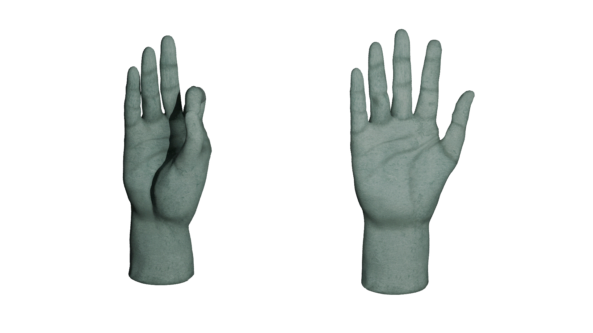

Something appears.
Notice what you do.
Performs Gyan Mudra (index and thumb together) to reach Nirvana
Abandon yourself (both palms open) and descend to Asura
Continue
Left Hand:
-
Right Hand:
-
Progress:
-